Ncdf
Different Ways To Evaluate N(x) in Mathematica
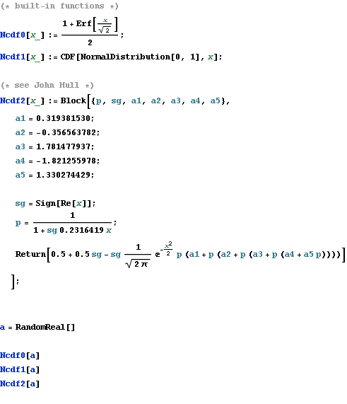
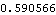
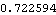


Notes on Error & Efficiency
Using built-in function, one can obtain almost exact values.
In constrast, the widely used approximation could introduce an errof of  , as shown in the figure.
, as shown in the figure.
But, as experiments show us, using built-in functions to evaluate N(x) is very inefficient.
If an algorithm involves N(x) frequently, and if one can withstand an error of  , the widely used approximation is a better choice.
, the widely used approximation is a better choice.
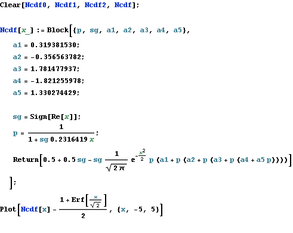
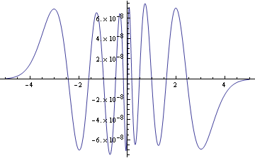
More Efficiently
Recently I designed an algorithm that evaluates N(x) really frequently. 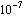 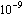
In this case, both of the above are not the best choice.
If one can withstand an error of
When x is out of the interval [-6, 6], we set N(x) to 0 or 1.
The error caused in this part this is, as shown in the following computations, always less than
Besides, althought the error due to qudratic interpolations depends on the derivative of N(x), as shown in the figure, its absolute value is quite small.
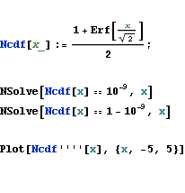

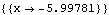
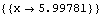
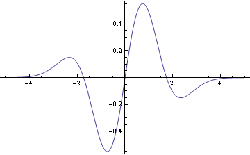